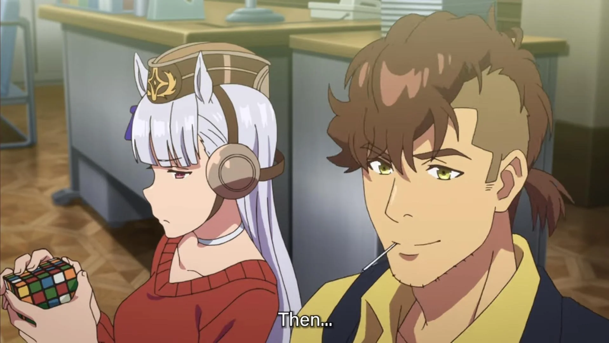
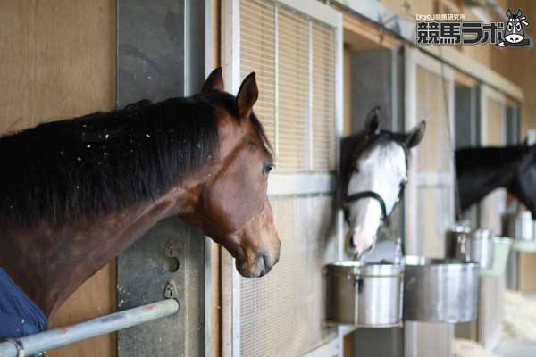
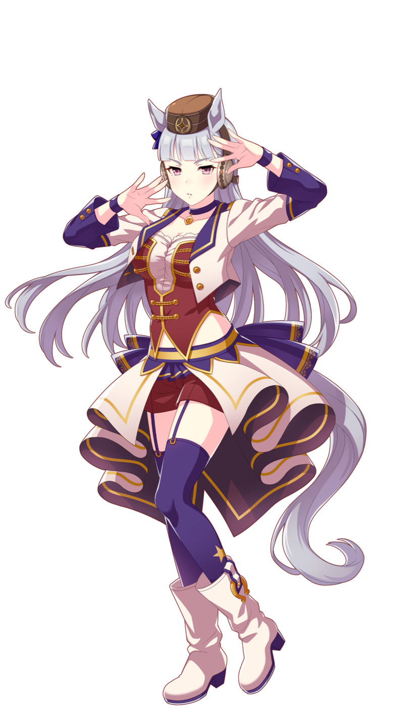
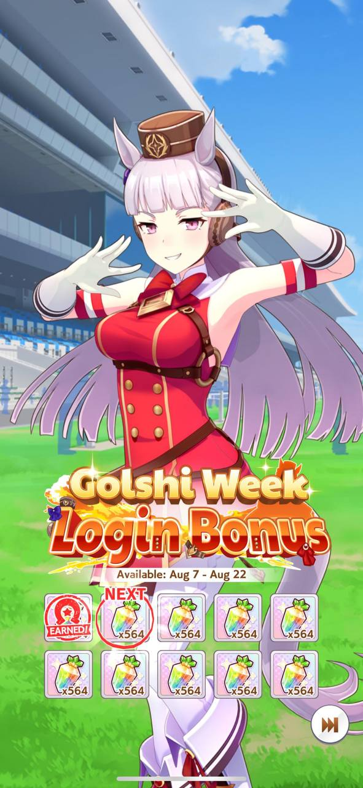
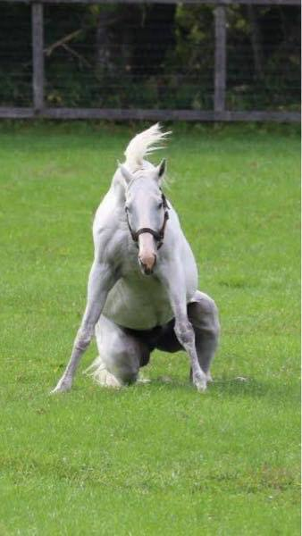
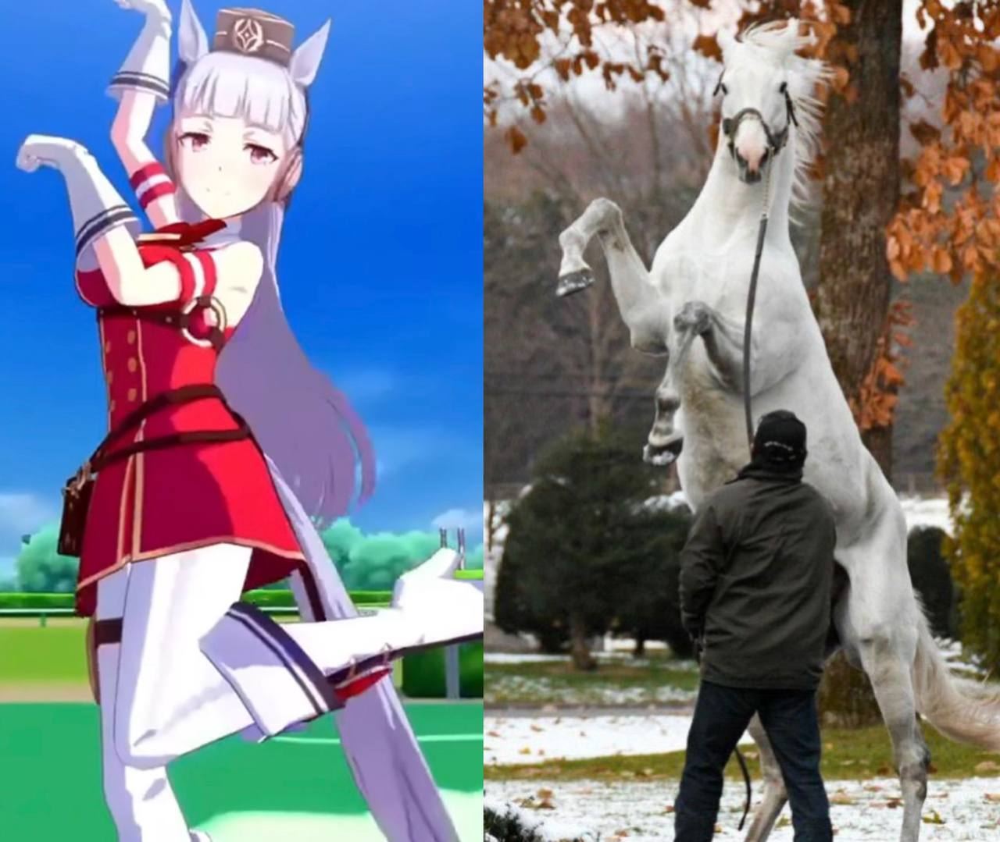

У Голд Шип длинные прямые серебристые волосы с прямой челкой, закрывающей лоб. Она носит
коричневую шляпу цилиндрической формы, украшенную золотой эмблемой, которая соединена коричневыми
ремешками, проходящими по бокам и сзади ее головы, а также одним ремешком под подбородком;
ремешки соединены по бокам головы большим медным круглым орнаментом. Общий вид её головного убора
напоминает сбрую лошади. Ее глаза розового цвета, а на правом ухе у нее фиолетовый бант. По
сравнению с другими персонажами у нее заметно мускулистое и спортивное телосложение, и она я
вляется одним из самых высоких персонажей в игре, ее рост составляет 170 см.
В своем гоночном наряде Голд Шип носит короткое красное платье без рукавов, украшенное двумя
золотыми полосками спереди слева и справа, которые расходятся на пару разрезов от бедер вниз и
образуют нижний край платья. На животе между золотыми полосками расположены шесть золотых пуговиц.
На шее у нее белый воротничок, украшенный большим красным бантом, с которого свисает золотое
украшение в форме ромба. На каждой руке у нее красная спортивная повязка с белой полоской
посередине, а кисти рук прикрыты большими белыми перчатками с двумя черными полосками.
На ней белые леггинсы с серыми узорами по краям и белые сапоги до середины икры, украшенные
красными бантами; спереди у ботинок идёт коричневая часть, на каждой из них по три золотые пряжки
и огромные загнутые манжеты с черными полосками по краям, повторяющие стиль ее перчаток.
На груди Голд Шип носит аксессуар, похожий на недоуздок для лошади, с тремя коричневыми
ремешками — два проходят выше и ниже груди, а один за спиной, — они соединены большими золотыми
обручами под каждой из ее рук. Ремешки украшены маленькими золотыми заклепками. На бедре у нее
коричневая седельная сумка с эмблемой в виде золотой подковы спереди и другой, меньшей по размеру
золотой эмблемой, похожей на лилию, сбоку. Сумка завязывается двумя коричневыми ремешками,
проходящими сверху и снизу на ее левом бедре; третий ремешок свободно свисает сзади, украшенный
заостренным золотым орнаментом. На правом бедре она носит еще один коричневый ремешок, украшенный
крупным золотым орнаментом в форме якоря.
В Uma Musume у всех лошадей есть украшение (обычно бантик) на одном из ушей. Бантик на правом ухе
означает, что настоящая лошадь была жеребцом, на левом ухе — кобылой. У Голд Шип бантик на правом ухе, т.к
настоящий Голд Шип действительно является жеребцом.
Серебристый цвет волос Голд Шип напоминает окрас настоящей лошади.
Голд Шип из аниме-адаптации Uma Musume: Pretty Deerby и из реальной жизни
6 золотых пуговиц на животе Голд Шип символизируют 6 побед в гонках категории G1 настоящей лошади.
Золотая эмблема в виде якоря на ремешке отсылает на имя Голд Шип (Gold Ship, с англ. «Золотой Корабль»).
Красные бантики на ботинках Голд Шип отсылают к банту на хвосте, который носила настоящая лошадь.
Красный цвет банта на хвосте лошади предупреждает о том, что к ней может быть опасно подходить.
Голд Шип на гонках Ханшин Дайсётэн 2013
Основа ее наряда красного цвета, что отражает цвет шелка, который носил жокей настоящей Голд Шип. Аналогично, белые и красные повязки на руках Голд Шип отражают белые полосы на рукавах костюма её жокея.
За свою гоночную карьеру у Голд Шип не было никаких серьезных травм и, уйдя на пенсию, он был в отличной форме, что отражено в игре спортивным телосложением Голд Шип.
О Голд Шип
Голд Шип (6 марта 2009 - настоящее время) - японская скаковая лошадь, выступавшая в 2012-2015 годах.
Он был уважаемой лошадью в мире скачек, известной своими причудами и непредсказуемым поведением. В
возрасте 5 лет Голд Шип стал первой лошадью, одержавшей вторую победу на Таразука Кинен.
Имя на японском: ゴールドシップ
Происхождение имени: Имя Голд Шип означает "Золотой корабль" с английского. Часть "Голд" в имени
лошадь скорее всего получила от своего отца — Стэй Голд.
История гонок: [13-3-2-10], включая двойную корону в 2012 году (Сацукишоу, Киккашоу), Арима Кинен
12-го года (G1), два Такаразука Кинен (2013-14) и весенний Тенношоу 15-го года (G1).
Интересные факты
Настоящий Голд Шип
Ходили слухи (и они подтвердились), что почти все ее реплики в игре и аниме-адаптации Uma Musume
придуманы её актрисой озвучивания, Хитоми Уэдой, на ходу.
Говорят, что интеллект настоящего Голд Шип равен интеллекту семилетнего человека
(в то время как уровень интеллекта большинства лошадей примерно равен уровню 3-4-летнего ребенка).
Настоящий Голд Шип бунтует, если не получает достаточно времени на игру.
Интересно, что одним из базовых навыков Голд Шип в игре является “Время игр окончено!”.
Голд Шип любит настольные игры и неплохо в них разбирается.
У нее также есть кубик Рубика, который часто встречается в аниме. У кубика Рубика шесть граней,
что указывает на количество выигранных G1 гонок Голд Шип.

Интересные отношения были у Голд Шип со своим товарищем по конюшне Джаст Э Вэй (Just A Way):
Настоящий Голд Шип никогда слишком не беспокоился о тренировках. Однако, по какой-то неизвестной причине, он
впадал в депрессию и расстраивался, если проигрывал тренировочный матч Джаст Э Вэй, и на некоторое
время отказывался от еды. Если конюшню Джаст Э Вэй занимали другие лошади, он приходил в бешенство.
Они вместе ездили во Францию, чтобы участвовать в скачках Prix De L'Arc de Triomphe.
Поскольку соседка Голд Шип по комнате в игре еще не была объявлена, многие фанаты предполагают,
что ее соседкой по комнате будет не кто иная, как Джаст Э Вэй.

Джаст Э Вэй и Голд Шип
Инцидент с 12 миллиардами иен:
Причина, по которой настоящий Голд Шип поздно стартовал на Таразука Кинен в 2015 году и проиграл
поставленные на него 12 миллиардов иен, заключалась в том, что он поссорился со своей соседней лошадью,
Тохо Джекл (сыном Спешл Уик) и стал в начале гонки проявлять агрессию в его сторону вместо того, чтобы покинуть стартовые ворота. Голд Шип знал, что он
сильно облажался в этой гонке, и старался избегать зрительного контакта с людьми (особенно своего тренера) после окончания гонки.
Её поза на иллюстрации сценического костюма является отсылкой к персонажу из аниме JoJo's
Bizarre Adventure.

Сценический костюм Голд Шип
Голд Шип в игре тесно связана с цифрой 564. Например, во время события "Golshi Week" каждый день
при заходе в игру можно было получить 564 морковки. Цифры 5, 6 и 4 на японском звучат как имя Голд Шип
(5 - go, 6 - ru, 4 - shi; Gorushi - Gold Ship).

Её реплика на главном экране в пляжном костюме, кажется, не имеет смысла, но если перечитать её в
обратном порядке, то окажется, что она звучит так: "Нам не нужны ворота, не так ли?"". Это отсылка к
инциденту с 12 миллиардами йен.
Другая её реплика в том же костюме: "Тебе не кажется, что было бы лучше начать с низкого старта?" —
отсылка к его знаменитой фотографии.

В игре у каждой лошади есть эксклюзивный титул, получение которого как-то связано с историей настоящей
лошади. Титул Голд Шип «Unpredictable» (англ. «непредсказуемый») требует от игрока выиграть в 6 гонках
категории G1 и набрать 480000 болельщиков, используя Голд Шип. Эти условия основаны на 6 победах в G1
настоящей лошади и на том, что Голд Шип в реальной жизни – одна из самых знаменитых скаковых лошадей.
Поза в одной из её победных анимаций является отсылкой на знаменитое родео Голд Шип.

Родео Голд Шип
В другой своей победной анимации Голд Шип ударяет вперёд ногами, роняя камеру. Это отсылка на то,
как часто настоящая лошадь пинала людей.
Первый секрет в описании Голд Шип в игре гласит: "Она страшно хорошо в викторинах на общие знания".
Это, конечно же, отсылает на интеллект настоящей лошади.